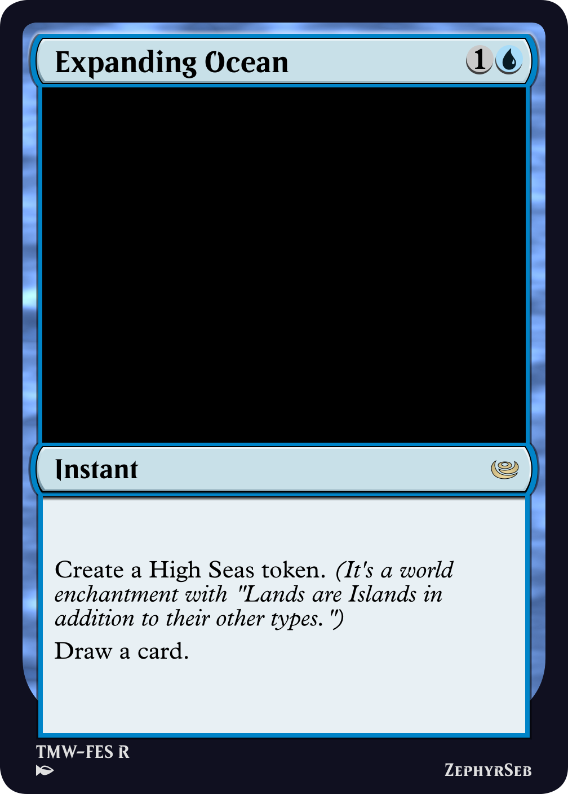
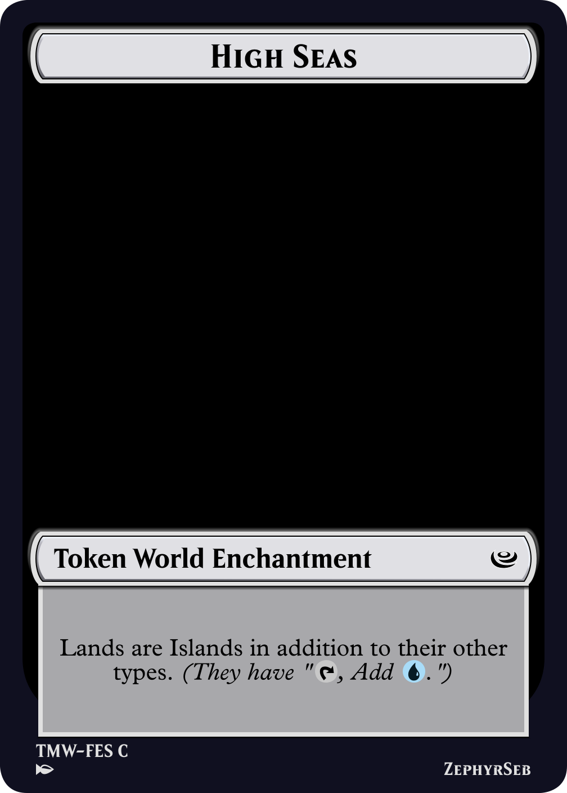
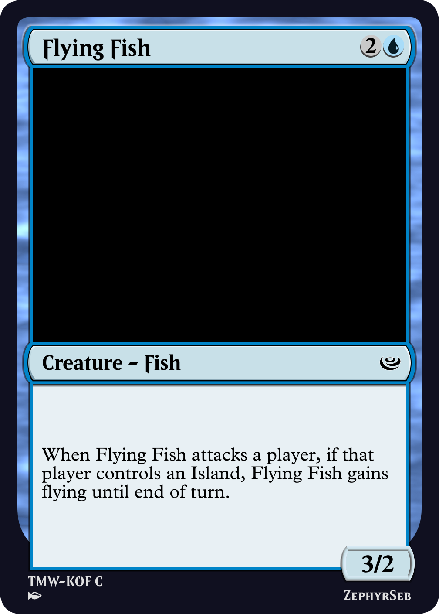
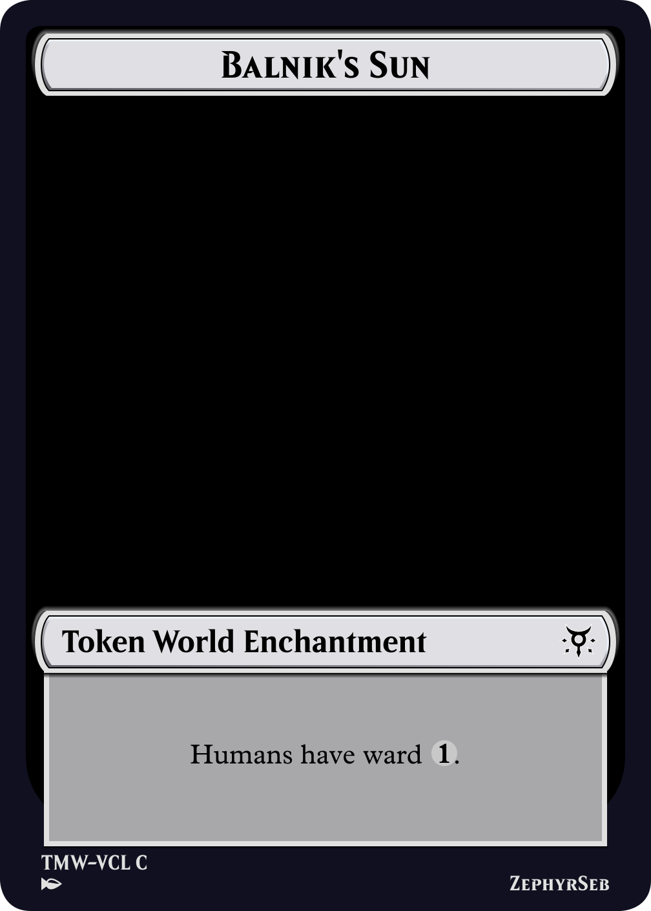
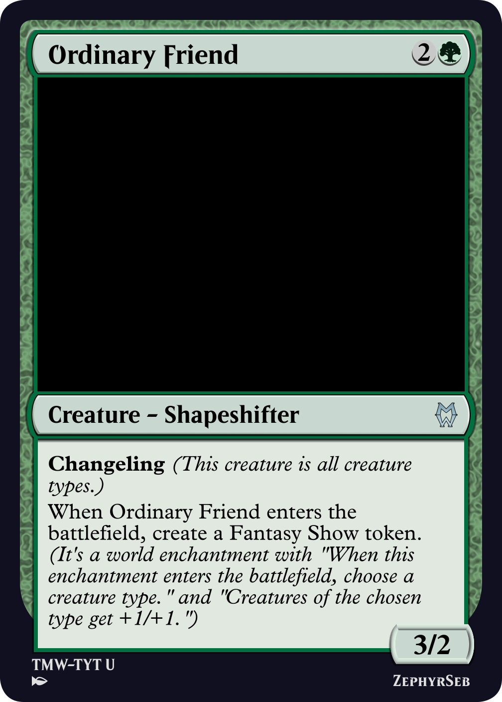
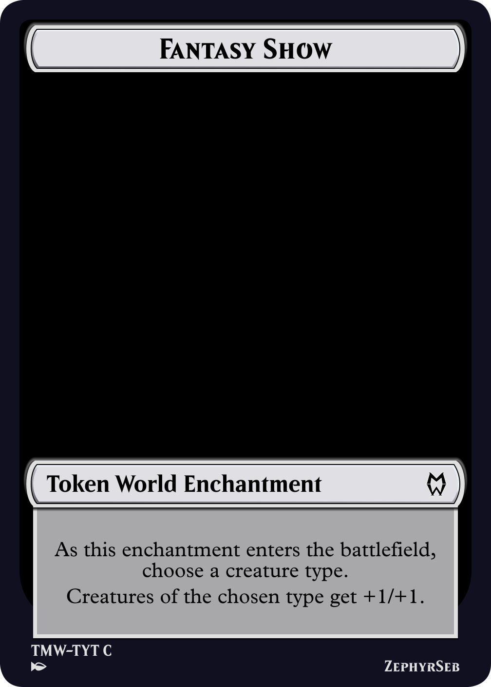

World enchantments date back to the early years of magic, first appearing in Legends. At the time, effects in the game often affected both players. But as Magic has evolved, such symmetrical effects have faded into obscurity, as has the world enchantment.

Concordant Crossroads
World is a supertype, similar to legendary. When state based actions are checked, if there are multiple world permanents on the battlefield, all except the most recent are put into their owner's graveyards. This in effect means that only one world enchantment can be in play at any time.
This uniqueness of worlds is usually cited as one of its biggest flaws, as all the opponent needs to do to destroy your hard earned world enchantment is to play one of their own. This essentially leads to the type having an inherent card disadvantage built-in, which is not something players particularly like.
Additionally, many world enchantment effects are symmetrical, such as Concordant Crossroads; it's usually a bad plan to spend mana on an effect that the opponent can capitalize on.
Interestingly, the flaws of world enchantments are also its benefits. Since only one world enchantment can be on the battlefield at a time, it's not possible to flood the board with them - this means that, from a design perspective, effects can be a little stronger without worrying about them stacking. It also prevents the board state from getting too complex, as having a lot of interacting effects can be very taxing for players to remember.
The simplest solution here would be to have the world enchantments 'cantrip', that is, draw a card when they enter. This is a powerful effect, and may be undesirable. Luckily, Magic has another mechanic that shows up in every set with in-built card advantage: tokens.
In recent times, a mechanic that dates all the way back to alpha, tokens, has become much more prevalent. In the last few years, we've seen predefined artifact tokens, particularly treasure tokens, in almost every set. You can get two permanents for one card with every card you play with tokens. Sacrifice your tokens for even more card advantage, or to put more tokens on the battlefield. Certainly, tokens have much less of a cost when it comes to board presence. This brings us to the idea, what if we had predefined world enchantment tokens?
While using tokens gets around the card disadvantage, part of the charm of world enchantments is that they affect the entire board. This means we have to be careful with our designs to make worlds that you can build decks around, rather than giving them generically useful effects.

Expanding Ocean and High Seas
For example, in Kingdom of Favola, one of the world enchantments is the high seas. Building around this enchantment is quite easy - you simply want to play a deck that is part blue. In particular, if the opponent isn't playing a blue deck, they don't gain any benefit from this world enchantment. Additionally, there are a few effects in Magic, such as islandwalk, that grant you benefits for your opponent controlling an island, which allows you to build into what would otherwise be seen as a downside to make the most of the effect.

Flying Fish


Daybound/Nightbound
Take your mind back to late 2021. Innistrad: Midnight Hunt has just released, you're playing at your LGS, and someone plays a permanent with daybound written on it. Cool, the board state now says it's day. You kill the permanent, but now you have to remember whether it is day or night for the rest of the game. Many players weren't a fan of this change from the traditional Innistrad werewolves.
What does this have to do with world enchantments? Perhaps the mistake with daybound/nightbound was not with the mechanic itself, but with how it was represented. What if, instead of daybound/nightbound, we had two world enchantments, one for day, one for night? Now, when a werewolf that wants it to be night ETBs, it becomes night, replacing any other world enchantments, until another player has a card that can make it day. Or a player changes the world enchantment to something entirely different (I first concepted this idea to represent TV shows, such as a fantasy show.)

Balnik's Sun and Moon
So, we've seen how they could be used, but how is this beneficial? First of all, the inherent card disadvantage no longer exists, secondly, we can use them to represent game states. In a Magic set, there are usually only a limited number of spots for tokens or other non-card game pieces. With that in mind, an individual set may have as few as two world enchantments. But with only a limited number per set, you can spread these wide across the set, featuring mechanics core to the sets themes, and allowing easy access to world enchantments without needing to reserve many card slots for them.
We've seen that using world enchantments as tokens restricts us to only a few types per set. But there is another way to get around this, one which allows the effects to become much more specific to the player playing it; choices. If the player has to make a choice as the enchantment enters, they can choose something that most benefits their own board state. For example, here's the fantasy show token mentioned earlier. This is useful in any typal deck, and likely won't benefit the opponent much, if at all. Especially if you play an unexpected type like squirrels.

Ordinary Friend and Fantasy Show
This implementation of world enchantments has a lot of promise, though for it to be truly successful in a constructed environment, it needs to be supported in a lot of sets. I'll be on the lookout for game states that could be world enchantments in the future. That's all from me today, so I hope the world falls in your favor.
ZephyrSeb